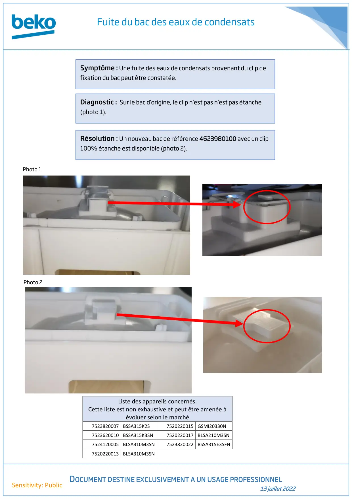

Fuite du bac condenseur

Fuite du bac des eaux de condensatsDOCUMENT DESTINE EXCLUSIVEMENT A UN USAGE PROFESSIONNEL13 juillet 2022Sensitivity: PublicListe des appareils concernés.Cette liste est non exhaustive et peut être amenée àévoluer selon le marché7523820007 BSSA315K2S7520220015 GSMI20330N7523620010 BSSA315K3SN7520220017 BLSA210M3SN7524120005 BLSA310M3SN7523820022 BSSA315E3SFN7520220013 BLSA310M3SNSymptôme : Une fuite des eaux de condensats provenant du clip defixation du bac peut être constatée.Diagnostic : Sur le bac d’origine, le clip n’est pas n’est pas étanche(photo 1).Photo 1Résolution : Un nouveau bac de référence 4623980100 avec un clip100% étanche est disponible (photo 2).Photo 2
1 / 1